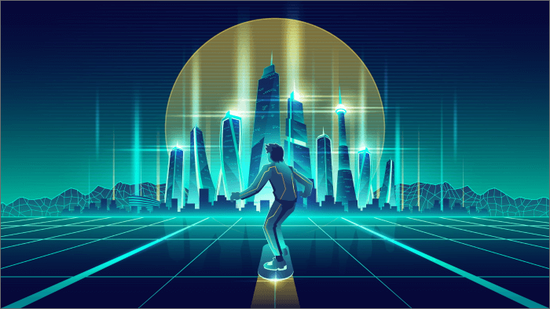
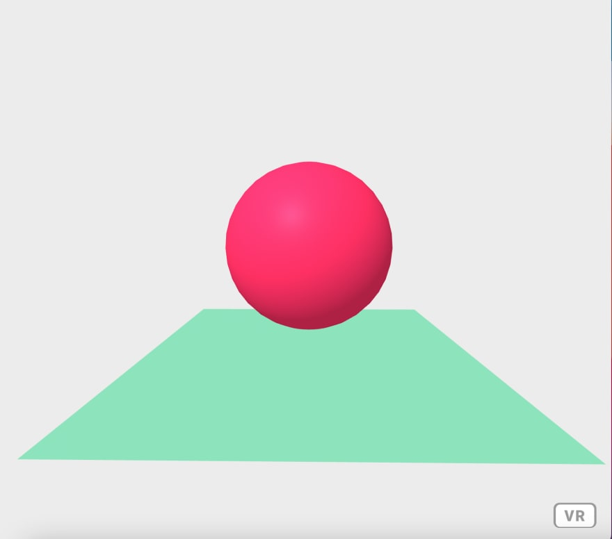
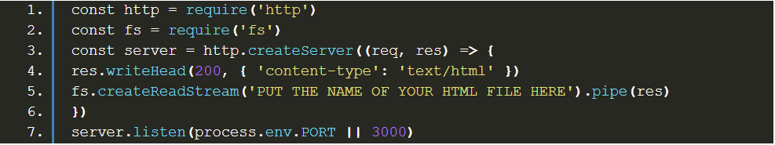
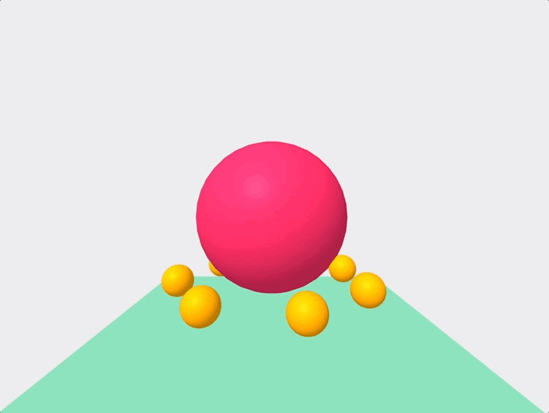

How to build the metaverse virtual world?

Introduction
If the last few decades represented the era of the internet, then the upcoming decades will be remembered for the metaverse. The metaverse will expand the virtual world making it more interactive, immersive, and collaborative than the internet. Despite many entrepreneurs and technologies dabbling in this space, blockchain technology has emerged as a technological framework that will support and help create a sustainable ecosystem for the metaverse. Today we already have a budding version of metaverse existing in the form of Gaming NFT marketplaces. Leading gaming companies looking forward to building their decentralized Blockchain Metaverse projects are confidently entering the metaverse space, signaling that metaverse and virtual reality is the future.
How to develop animated VR for the metaverse virtual world?
The web might not be the first thing that comes to mind when discussing virtual reality. However, the web is one of the only true cross-platform technology. Building a virtual reality (VR) app with JavaScript will run on any VR system. Few applicable and up-to-date technologies need to be used in developing VR websites. First, we will be using Aframe.io, which is a library for rendering and VR scenes with some simple HTML and Javascript. To use more complex graphics, you may choose Three.js supported by Aframe.io. Next, we will be using WebXR, a library developed by Mozilla that allows you to directly interact with the VR on the web.
Staring with AFrame.io
To gain access to Aframe.io, just add the codes via Content Delivery Network (CDN) servers, a group of geographically distributed servers that speed up the delivery of web content by bringing it closer to where the users are.
First, we will create a simple VR scene with the following HTML :


The key point to notice here is that we surround our VR scene with a tag. we can use various shapes in our scene by including relevant tags. So you will notice while you can drag the screen to move the camera, you can’t use the VR device yet as an HTML file has to be served because VR can’t be run on a static file.
This can be done easily with nodeJS. Setup an npm project with the following javascript file:

Finally, we can manipulate our scene with Javascript :


So now, the animated VR scene has successfully been created with less than 100 lines of code. Now test your VR website in either Chrome or Firefox using WebXR API. Once installed, you can go to the WebXR tab while inspecting the page and play the emulated headset.
What are the aspects of building mobile gaming metaverse?
We cannot discuss the world of games without mentioning metaverse nowadays. The concept of a metaverse in games is simply an interconnected virtual world universe. Techno experts effectively see metaverse as the next natural evolution of the internet and digital space. Metaverse is the upcoming future, and there are some ominous signs of growth in the gaming space. Let us look at the aspects that will help metaverse become a reality soon in the world of games.
Immersion:
The future of Virtual reality is tied to console, PC, or standalone headsets such as Quest. We can see leaps in VR technology with Oculus, which translates physical movements into VR, expanding its range beyond the PC reliant headsets with external tracking. The Immersion of the metaverse focuses on favoring more mass-market devices with internal tracking
What are the aspects of building mobile gaming metaverse?
The mobile world is heavily dependent on content delivery through Apple and Google. People have to download an app, and then they can have the option to make a payment. But the world of game streaming is taking giant leaps. Microsoft has launched Xbox cloud gaming that runs on mobile. It is a step closer to the metaverse vision of a seamless streaming experience on mobile devices.
Open standards:
If metaverse is taken as a true successor of the internet, it must be built on open standards that connect all the virtual experiences. This means no single entity can own the metaverse, as owning the metaverse can be highly problematic. This open standard lies at odds with the current business model of Apple and Google that operate like walled gardens where they have strict control of the billing and what is allowed to be published.
Greater adoption of social features:
Mobile games have recently seen an explosion in social features. Modern mobile games are adopting guild mechanics and co-op gameplay. The greater adoption of social features will pave the path for metaverse to become a reality more effectively.
A decentralized economy:
For a metaverse to thrive, there will be a need for a decentralized economy as centralized economies such as Google and Apple want to retain control of the whole ecosystem and the payment structure. Blockchain, cryptography and decentralized finance lay out a vision for technological solutions that could facilitate a global and functioning economy for the metaverse.
What standards are needed for decentralized Metaverse development?
The internet that we are experiencing today works on standards and protocols for visual presentation, communication, graphics, data, etc. It underlies every form of real-time communication between a browser and servers of the internet. The metaverse will require a more complex and resilient set of interoperability and live synchronous experience. Metaverse needs to standardize some existing standards around a smaller set per function. While the web is built on open standards & protocols, much of it is closed and proprietary. Today’s open standards allow interoperability between vendors in a single industry, and metaverse will require interoperability across the industries. Following are some of the key standards and other key requirements integral for the development of a decentralized Metaverse :
- High bandwidth decentralized network of computers hosting the metaverse so that it is beyond the control of a single entity or a centralized body. It should be able to facilitate decentralized data transmission for obstinate and real-time connections.
- Open and interoperable standards for media, like text, images, audio, video, 3D scenes, 3D items, 3D sequences and 3D applications supporting vectors.
- Open programming languages include HTML, JavaScript, WebXR, WebAssembly, WebGPU Shader Language, etc.
- eXtended Reality (XR) for real-and-virtual combined environments and human-machine interactions generated by computer technology with hardware such as smart glasses, Omni treadmills, haptic gloves, VR headsets, industrial cameras, and scanning sensors.
- Blockchain and smart contract for transparent, secure and permissionless transactions.
- Computing power to support data processing, AI, projection, etc.
- 3D immersive simulations of the different worlds featuring real-world environments and ecosystems.
- Payment gateways to support digital currency exchanges and payment across flat currencies and cryptocurrencies.
What are the possibilities within the Metaverse ecosystem?
So as it is with every ecosystem, the functioning of metaverse will highly depend on how conveniently users can transact in. Cryptocurrencies enable secure online payments without third-party intermediaries and facilitate real-world and digital transactions. Moreover, with the ability to convert physical currency into digital currency, people will easily switch between the physical world and the metaverse. Consumers will purchase digital avatars, virtual land in the metaverse and even throw a birthday party. Artists will be able to perform in the metaverse and earn crypto tokens, and it will enable the artist to exchange those earnings for goods that can be used in the physical world. The expansion of the metaverse will, in turn, expand the unlocked value of the digital market, and potentially it will lead to a rise of global economics in the future.
Conclusion
Metaverse has been getting much attraction in recent years because it is expected to connect people from the real world to engage in the virtual environment. It has already garnered enough attraction from the best tech giants, and although the development of metaverse is in the toddler’s stage, great things are already being expected. Startups and enterprises have also started adapting to the metaverse and its vast implications, and companies are already putting up a lot of research on consumerism that is about to take place in the metaverse. The metaverse is new to the internet world, and it will have a tremendous impact on society. Web 3.0s new era of metaverse will open doors to unlimited opportunities and creativity to open up a new platform for startups and enterprises.
Thank you for reading ...